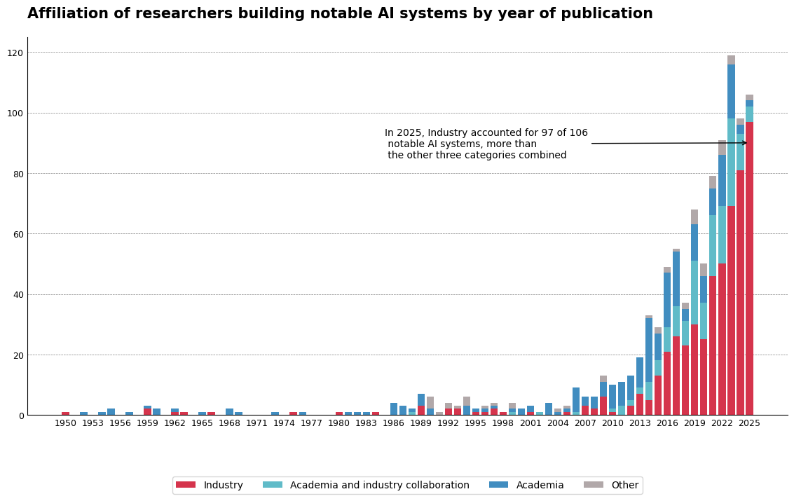
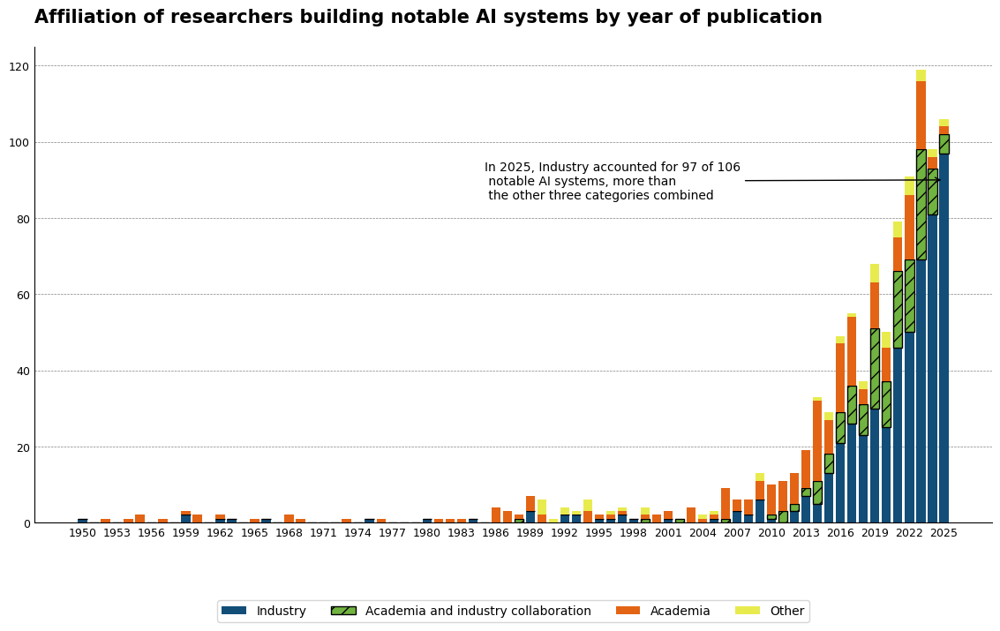

In my Module 5 post I reproduced an Our World in Data chart on AI research affiliations, then recoloured it with my own palette. This post checks both versions against the Data Visualization Checklist (Evergreen & Emery, 2016) and a colour blindness simulator, then fixes what needed fixing.
Master Visualization
After the fix the score improved from 71.7% to 89.1% passing the checklist 85%. Color blindness was not addressed for this master visualization as it is the reproduction of OWID data visualization. The title, border line and tick marks issues were solved. The following chart shows the improved master visualization.
This is the master visualization before the fixes, from my Module 5 post:


Alternative Colour Reproduction
Color issues were fixed here. A hatch pattern was added to two bars (Academia and Industry Collaboration and Academia) to ensure that these bars do not depend on colors. Light color was used for ‘Other’ to make sure it does not look similar to Industry. This solves the color blindness issue and color legibility in black and white. Besides, the same non color fixes are made as in the master visualization.
This is the alternative colour reproduction before the fixes, from Module 5 post:


Reflection
Checked this data visualization against a real checklist and a real colour blindness simulator, instead of just looking at it. It also gave a clear before and after score to prove the fixes actually worked, rather than just assuming they did. The master visualization also showed me that accessibility and colour choice are two separate problems because its score improved a lot even with the colours locked in place.
References
- Colblindor. Coblis - Color blindness simulator. Color-Blindness.com. https://www.color-blindness.com/coblis-color-blindness-simulator/
- Evergreen, S., & Emery, A. K. (2016). Data visualization checklist. https://www.datavisualizationchecklist.com/